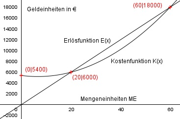

Aufgabe 139 Einen Monopolisten kosten 20 produzierte Bauteile 6000 €, und 60 Stück kosten 18000 €. Er erzielt bei diesen Mengen weder Gewinn noch Verlust. Er ermittelt seine Kosten mit einer quadratischen Funktion und rechnet dabei mit 5400 € Fixkosten. Als Erlösfunktion nutzt er eine lineare Funktion. Wie hoch ist sein maximaler Gewinn?  Allgemeine Form einer ganzrationalen Kostenfunktion 2. Grades: K(x) = ax2 + bx + Kf K’(x) = 2ax + b K’’(x) = 2a 3 Bedingungen: 1. Rechnet dabei mit 5400 € Fixkosten bedeutet: K(0) = 5400 --> a * 02 + b * 0 + c = 5400 --> c = 5400 2. Einen Monopolisten kosten 20 produzierte Bauteile 6000 € bedeutet: (c = 5400 eingesetzt) K(20) = 6000 --> a * 202 + b * 20 + 5400 = 6000 --> 400a + 20b + 5400 = 6000 |-5400 400a + 20b = 600 I 3. 60 Stück kosten 18000 € bedeutet: K(60) = 18000 --> a * 602 + b * 60 + 5400 = 18000 --> 3600a + 60b + 5400 = 18000 | -5400 3600a + 60b = 12600 II I * (-3) + II -1200a - 60b = -1800 3600a + 60b = 12600 ---------------------- 2400a = 10800 |:2400 a = 4,5 a = 4,5 in I eingesetzt: 400 * 4,5 + 20b = 600 1800 + 20b = 600 |-1800 20b = -1200 :20 b = 60 Gesuchte Kostenfunktion: K(x) = 4,5x2 - 60x + 5400 Als Erlösfunktion nutzt er eine lineare Funktion, bedeutet: E(x) = p * x + b mit p = Verkaufspreis Macht bei K(20) und K(60) weder Gewinn noch Verlust bedeutet: E(20) = K(20) p * 20 + b = 6000 I E(60) = K(60) p * 60 + b = 18000 II I * (-3) + II -60p - 3b = -18000 60p + b = 18000 -------------------- -2b = 0 |:(-2) b = 0 b = 0 in I eingesetzt: 20p + 0 = 6000 | :20 p = 300 Gesuchte Erlösfunktion: E(x) = 300x Maximaler Gewinn: G(x) = E(x) - K(x) = 300x - (4,5x2 - 60x + 5400) G(x) = 300x - 4,5x2 + 60x - 5400 G(x) = - 4,5x2 + 360x - 5400 G’(x) = -9x + 360 G’(x) = 0 - 9x + 360 = 0 |-360 -9x = -360 |:(-9) x = 40 ME G’’(x) = -9 < 0 --> Maximum G(40) = -4,5 * 402 + 360 * 40 - 5400 G(40) = - 7200 + 14400 - 5400 G(40) = Gmax = 1800 €